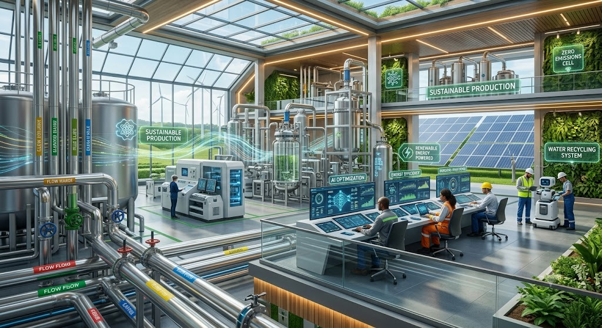
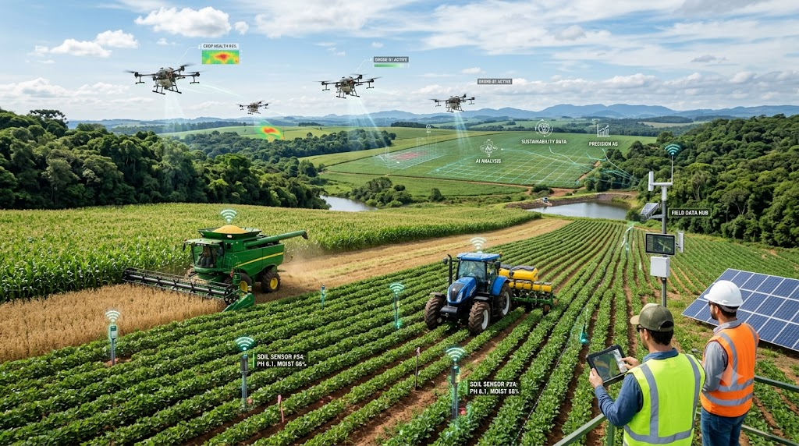

⚙️
Automação
A IA poderá automatizar tarefas repetitivas, simulações e análises, permitindo que os profissionais se concentrem em problemas mais complexos.
AGRINHO 2026
Tecnologia, Inteligência Artificial e engenharia trabalhando juntas para construir uma produção mais eficiente e sustentável.
Descubra mais
TECNOLOGIA E AGRICULTURA
A Inteligência Artificial está transformando diferentes profissões e setores da sociedade. No agronegócio, ela pode ajudar na análise de dados, automação, previsão de problemas e utilização mais eficiente dos recursos naturais.
A engenharia química também será impactada por essas mudanças. Nos próximos 5 a 10 anos, o profissional deverá utilizar cada vez mais ferramentas digitais para solucionar problemas industriais e ambientais.
INTELIGÊNCIA ARTIFICIAL
A IA poderá automatizar tarefas repetitivas, simulações e análises, permitindo que os profissionais se concentrem em problemas mais complexos.
Sistemas inteligentes conseguem analisar grandes quantidades de dados e auxiliar na tomada de decisões.
A IA pode acelerar pesquisas para descobrir novos materiais, catalisadores e processos mais eficientes.
Tecnologias inteligentes podem contribuir para processos industriais com menor consumo de energia e menor impacto ambiental.

A integração entre engenharia, automação e Inteligência Artificial pode tornar os processos industriais mais eficientes e sustentáveis.
PRINCIPAIS IMPACTOS
Cálculos, análises simples e algumas simulações poderão ser realizadas com auxílio de sistemas inteligentes.
O engenheiro poderá dedicar mais tempo à interpretação de resultados, planejamento e tomada de decisões.
Sensores, automação e Inteligência Artificial poderão trabalhar juntos para monitorar processos em tempo real.
A tecnologia poderá auxiliar na redução de desperdícios, consumo energético e impactos ambientais.
PRODUÇÃO + MEIO AMBIENTE
O crescimento da produção agrícola precisa caminhar junto com a preservação dos recursos naturais.
A Inteligência Artificial pode contribuir identificando padrões e ajudando produtores e engenheiros a utilizarem água, energia e matérias-primas de maneira mais eficiente.
Uso mais eficiente da água
Redução do consumo de energia
Redução de desperdícios
Menor impacto ambiental
DESAFIOS
Apesar das oportunidades, o uso da IA também apresenta desafios que precisam ser considerados.
A dependência excessiva de sistemas automatizados pode prejudicar a análise crítica dos profissionais.
Sistemas de IA podem apresentar resultados incorretos. Por isso, a supervisão humana continua sendo importante.
Algumas tarefas básicas podem ser reduzidas, exigindo que os profissionais desenvolvam novas habilidades.
Empresas com maior acesso à tecnologia podem obter vantagens em relação às que possuem menos recursos.
PREPARAÇÃO
A engenharia química não deve desaparecer por causa da IA. Ela tende a se tornar ainda mais tecnológica.
Conhecimentos básicos de programação podem ajudar na utilização de ferramentas digitais.
Saber interpretar dados será cada vez mais importante para tomar decisões.
O profissional deverá avaliar se os resultados fornecidos pela IA realmente fazem sentido.
A capacidade de aprender novas tecnologias será fundamental.
A Inteligência Artificial pode transformar a engenharia química e o agronegócio, mas o conhecimento humano continuará sendo essencial para interpretar resultados, tomar decisões e garantir que a tecnologia seja utilizada de maneira segura e sustentável.